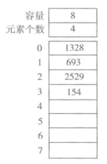
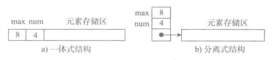

顺序表的结构与实现
学习目标:
- 掌握 一体式结构和分离式结构实现原理
学习目标
- 了解顺序表的结构
- 了解顺表的两种实现方式
1 顺序表的结构

一个顺序表的完整信息包括两部分，一部分是表中的元素集合，另一部分是为实现正确操作而需记录的信息，即有关表的整体情况的信息，这部分信息主要包括元素存储区的容量和当前表中已有的元素个数两项。
2 顺序表的两种基本实现方式

图a为一体式结构，存储表信息的单元与元素存储区以连续的方式安排在一块存储区里，两部分数据的整体形成一个完整的顺序表对象。
一体式结构整体性强，易于管理。但是由于数据元素存储区域是表对象的一部分，顺序表创建后，元素存储区就固定了。
图b为分离式结构，表对象里只保存与整个表有关的信息（即容量和元素个数），实际数据元素存放在另一个独立的元素存储区里，通过链接与基本表对象关联。
3 元素存储区替换
一体式结构由于顺序表信息区与数据区连续存储在一起，所以若想更换数据区，则只能整体搬迁，即整个顺序表对象（指存储顺序表的结构信息的区域）改变了。
分离式结构若想更换数据区，只需将表信息区中的数据区链接地址更新即可，而该顺序表对象不变。
小结:
- 掌握 一体式结构和分离式结构实现原理